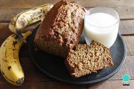
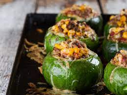
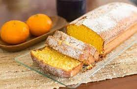

Sopa de verduras
ingredientes
- 1 cebolla mediana
- 1 diente de ajo
- 1 puerro
- 2 ramas de apio
- 1 zanahoria mediana
- 2 rodajas de calabaza
- 1 batata mediana
- 1 choclo mediano
- 4 hojas de acelga
- 3 litros de agua
- Sal y pimienta
- Aceite de oliva, a gusto
preparacion
- Lavar y pelar todas las verduras.
- Picar la cebolla y el ajo. Cortar el puerro en juliana (tiritas) y saltear en una olla con dos cucharadas de aceite de oliva. Salpimentar y cocinar durante 3 minutos.
- Picar el apio, tanto tallos como hojas, y agregar a la olla. Cocinar 2 minutos más.
- Cortar la zanahoria, la calabaza y la batata en cubos de un centímetro. Desgranar el choclo. Cortar las hojas de acelga en tiras de un centímetro de ancho aproximadamente.
- Agregar a la olla lo cortado anteriormente e incorporar el agua.
- Cocinar a fuego medio hasta que las verduras estén cocidas -al pincharlas deben estar blandas, pero no se desarmarse para mantener la textura- y que el líquido se reduzca para concentrar los sabores, aproximadamente 40 minutos.
- Probar la sopa, de ser necesario rectificar la sal o la pimienta.
- Servir bien caliente.

Budin de Banana
ingredientes
- 120 g de manteca blanda
- 170 g de azúcar
- 2 huevos
- 250 g de banana
- 200 g de harina leudante
- 1 cucharada de canela en polvo
- 1 cucharadita de polvo para hornear
- 100 gramos de nueces procesadas
Preparacion
- Pisar las bananas y hacer un puré
- Batir el azúcar y la manteca hasta lograr una crema.
- Agregar los huevos de a uno batiendo enérgicamente.
- Incorporar la harina, el polvo de hornear, la canela, el puré de bananas y las nueces.
- Mezclar todo sin batir.
- Cocinar durante 40 minutos en horno a 170° hasta que al meter un cuchillo en el centro y salga seco.

Zapallitos Rellenos
ingredientes
- 2 dientes de ajo
- 2 cebollas
- 2 morrones rojos
- 12 zapallitos
- 10 cucharadas de aceite de oliva
- 300 g de carne picada
- Sal y pimienta, a gusto
- 12 cucharadas de parmesano rallado
preparacion
- Cortar a los zapallitos las tapitas superiores y ahuecarlos (reservar la pulpa).
- Rociarlos con aceite de oliva y hornearlos de 10 a 15 minutos.
- Picar la cebolla, el ajo y el morrón. Dorarlos en una sartén con 5 cucharadas de aceite. Agregar la pulpa del zapallito picada y cocinar 10 minutos más. Incorporar la carne, salpimentar y cocinar 10 minutos más.
- Rellenar los zapallitos, espolvorear con parmesano y gratinar 10 minutos.

Budin de Mandarina
ingredientes
- 1 huevo
- 2 mandarinas grandes
- 100 cc de aceite de girasol
- 1 y 1/2 tazas de harina leudante
- 1 taza de azúcar
- 1 budinera enmantecada y enharinada
preparacion
- Exprimir una de las mandarinas y reservar el jugo.
- Cortar la otra mandarina por la mitad, sacarle las semillas, cortarla en trozos y ponerla en la licuadora o procesadora (con cáscara).
- Sumarle el aceite, el huevo, el azúcar y agregarle el jugo reservado. Procesar todo hasta que desaparezca la cáscara.
- Poner la mezcla en un bowl y añadirle la harina, mezclar con movimientos envolventes para airear el batido.
- Verter la preparación en la budinera. Cocinar a fuego moderado durante 45 minutos, decorar con un glasé de mandarinas (azúcar impalpable mezclada con el jugo) o azúcar impalpable.